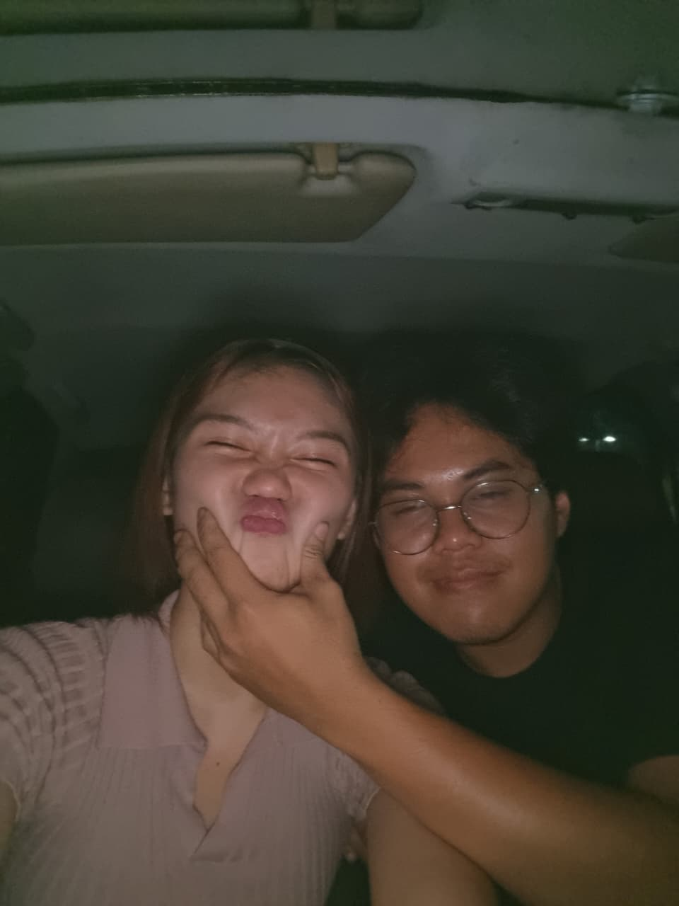
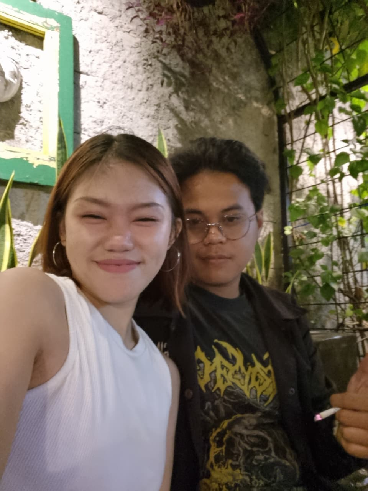
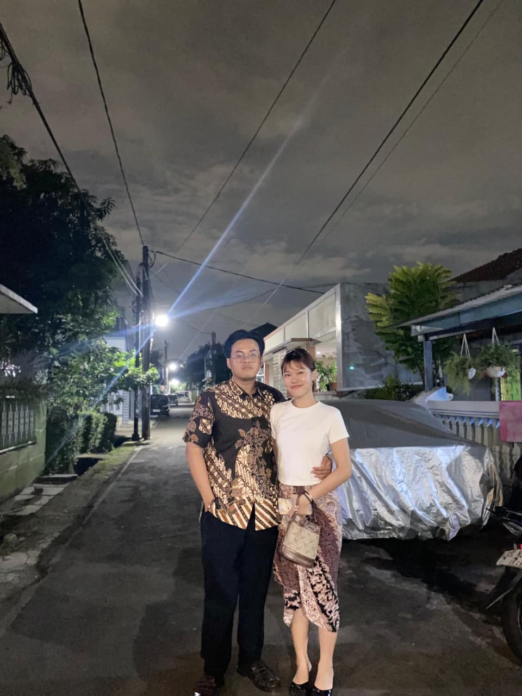
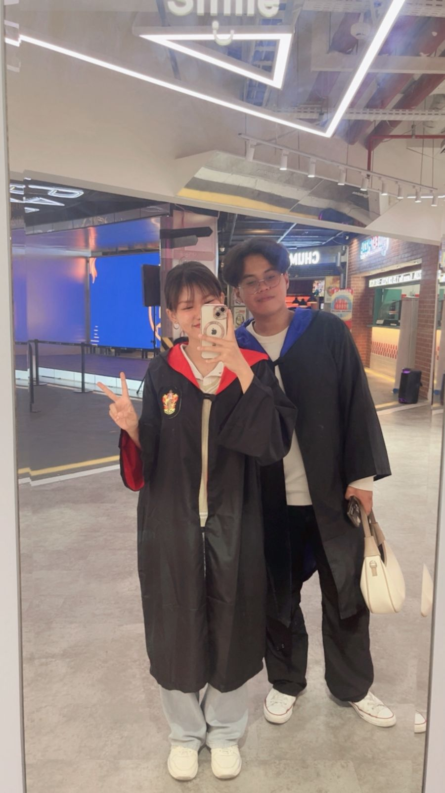
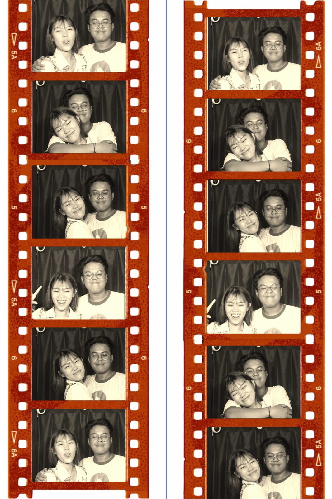
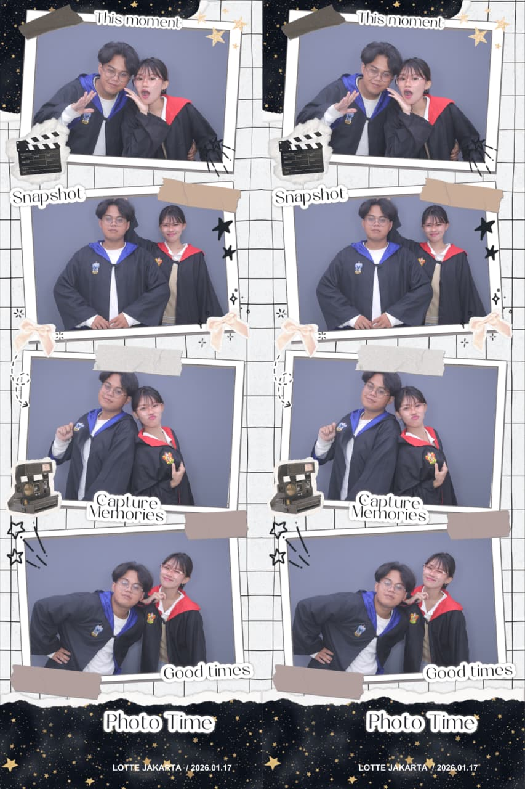

~ Satu Tahun Penuh Cinta ~
22 Mei 2026
Setahun ini mengajarkan kita untuk tetap percaya,
saling menjaga, dan terus memilih satu sama lain.
Selamat anniversary pertama, sayang.
22 Mei 2026
Arini yang paling kusayang,
Satu tahun. Dua kata yang terdengar sederhana, tapi bagi kita — bagi aku dan kamu — dua kata itu menyimpan ribuan momen yang tidak mungkin bisa aku ceritakan semuanya. Satu tahun penuh perjuangan, rindu, senyum di balik layar, dan cinta yang terus dipilih setiap harinya meskipun jarak berdiri di antara kita.
Aku tidak akan pura-pura bahwa LDR itu mudah. Kita tahu betul seberapa beratnya — malam-malam yang terasa panjang karena kamu tidak ada di sini, hari-hari yang ingin aku bagi tapi hanya bisa lewat pesan, momen-momen kecil yang aku simpan sendiri karena tidak ada cara lain untuk membaginya selain menunggumu online. Tapi di balik semua itu, ada satu hal yang selalu membuatku bertahan: kamu.
Kamu, dengan caramu yang sederhana tapi selalu terasa luar biasa bagiku. Kamu yang menanyakan kabarku di sela-sela kesibukanmu. Kamu yang tetap ada meskipun kita tidak bisa saling melihat setiap hari. Kamu yang membuat jarak itu terasa sedikit lebih ringan hanya dengan nama panggilanmu yang muncul di layar ponselku.
Kalau boleh jujur — ada malam-malam di mana aku merasa lelah. Bukan lelah mencintaimu, tapi lelah dengan situasinya. Lelah karena rindu dan tidak tahu harus dibuang ke mana. Tapi setiap kali aku hampir menyerah pada perasaan itu, aku ingat lagi kenapa aku memilih kamu. Aku ingat lagi betapa beruntungnya aku punya seseorang seperti kamu di hidupku — seseorang yang sabar, yang hangat, yang mau bertahan bahkan di jarak sejauh ini.
Arini, kalau ada kata-kata yang ingin aku tarik kembali, momen di mana aku tidak cukup hadir, atau hari-hari di mana aku membuatmu merasa tidak dihargai — aku minta maaf dengan tulus. Kamu layak mendapatkan yang terbaik, dan aku berjanji untuk terus berusaha menjadi versi diriku yang lebih baik, demi kita.
Di hari yang istimewa ini, aku tidak ingin memberimu janji yang besar-besar dan kosong. Aku hanya ingin berjanji satu hal yang sederhana tapi aku pegang dengan sepenuh hati: aku akan terus memilihmu. Setiap hari, dalam setiap kondisi, aku akan terus memilih untuk mencintaimu, menjagamu, dan berjuang bersamamu — sampai jarak itu akhirnya benar-benar tidak ada lagi di antara kita.
Satu tahun ini adalah buktinya. Bukti bahwa cinta yang nyata tidak kalah oleh jarak. Bukti bahwa kita bisa. Dan aku percaya — ini baru awalnya.
Selamat anniversary yang pertama, Arini. Terima kasih sudah ada. Terima kasih sudah bertahan. Terima kasih sudah menjadi bagian paling hangat dari hidupku.
Dengan cinta yang tidak akan habis,
Mikhail 🌸
Setiap momen adalah bagian dari cerita kita yang indah
Ada sesuatu yang berbeda sejak pertama kali kita berbicara. Seperti semesta punya rencana yang sudah lama tersimpan, menunggu saat yang tepat untuk mempertemukan kita.
Dari obrolan biasa menjadi sesuatu yang terasa istimewa. Aku mulai menunggu pesanmu, dan aku tahu — ini bukan sekadar pertemanan biasa.
Ada hari di mana aku sadar bahwa kamu bukan lagi sekadar seseorang yang aku kenal — kamu sudah menjadi seseorang yang aku rindukan.
Layar memang tidak bisa menggantikan kehadiranmu, tapi wajahmu di balik kamera sudah cukup untuk membuat hari-hariku terasa lengkap.
Tidak semua hari mudah. Tapi setiap kali kita melewatinya bersama, aku semakin yakin bahwa kamu adalah orang yang tepat untuk menghadapi apapun bersamaku.
Satu tahun penuh cinta, rindu, tawa, dan perjuangan. Ini baru awal dari banyak tahun indah yang akan kita lewati bersama.
Setiap foto menyimpan cerita yang tidak akan pernah aku lupakan

Momen pertama yang selalu aku ingat 💕

Senyummu adalah favoritku 🌸

Hari yang selalu aku syukuri ✨

Bersamamu, semua terasa ringan 💫

Momen yang tak ternilai harganya 🌷

Kamu, selamanya 💗
Dari ribuan alasan yang ada, inilah beberapa yang paling aku rasakan
Karena kamu tetap berarti meskipun jarak memisahkan kita setiap harinya.
Karena suaramu bisa membuat hari yang paling berat terasa jauh lebih ringan.
Karena kamu adalah rumah yang selalu aku rindukan, kemanapun aku pergi.
Karena bersamamu, aku belajar arti sabar, percaya, dan bertahan dengan tulus.
Karena aku tidak hanya mencintaimu hari ini — aku ingin terus memilihmu esok dan seterusnya.
Karena tawamu adalah suara paling indah yang pernah aku dengar.
Karena kamu ada di pikiranku bahkan di malam-malam yang paling sepi sekalipun.
Karena setiap pesan darimu selalu berhasil membuat hari-hariku sedikit lebih cerah.
Karena kamu tidak hanya hadir di hari-hari menyenangkan, tapi juga di hari-hari terberatku.
Karena cintamu mengajariku bahwa hal-hal terbaik dalam hidup memang layak untuk diperjuangkan.
Ada yang bilang LDR itu tidak mungkin berhasil. Bahwa jarak pasti akan mengikis cinta, bahwa rindu lama-lama akan berubah jadi bosan, bahwa layar tidak akan pernah cukup menggantikan kehadiran nyata.
Tapi kita sudah membuktikan sebaliknya — satu tahun ini adalah jawabannya.
Aku tahu betapa beratnya menunggu. Menunggu waktu yang pas untuk video call, menunggu kabar bahwa kamu sudah sampai dengan aman, menunggu hari di mana kita akhirnya bisa duduk berdekatan tanpa ada layar di antara kita. Tapi setiap penantian itu terasa berharga karena yang aku tunggu adalah kamu.
Setiap chat yang kamu kirim, setiap panggilan malam yang kita jalani, setiap "selamat tidur" yang kita kirim satu sama lain — semuanya sudah menjalin jarak ini menjadi sesuatu yang kita miliki bersama.
Dan aku percaya — suatu hari nanti, jarak itu tidak akan ada lagi. Kita akan bertemu, dan semua rindu yang sudah bertumpuk selama ini akan akhirnya menemukan rumahnya.
Sampai saat itu tiba, aku di sini. Selalu.
Klik tombol di bawah ini
Terima kasih sudah bertahan sejauh ini. Terima kasih sudah menjadi bagian paling indah dari hari-hariku. Terima kasih sudah memilih untuk tetap ada, bahkan di jarak sejauh ini.
Selamat anniversary yang pertama, Arini. Semoga kita selalu diberi kesempatan untuk saling memilih, saling menjaga, dan suatu hari nanti — akhirnya menghapus jarak yang selama ini kita lawan bersama.
Cintaku tidak mengenal jarak, dan tidak akan pernah.
Dari Mikhail, untuk Arini.
22 Mei 2026 💕